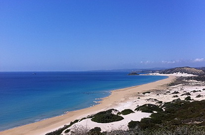
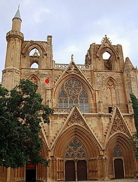
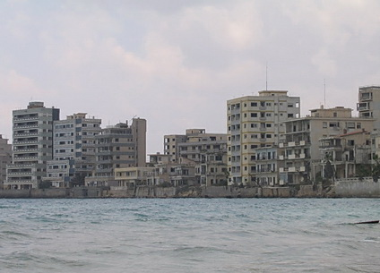
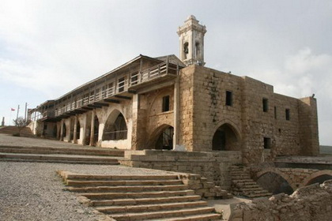
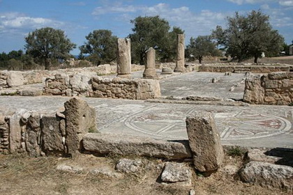
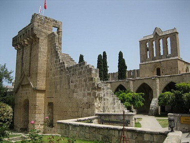
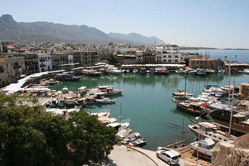
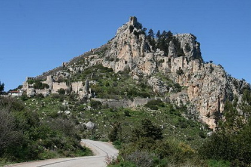

Маршрут разработан Денисом Ковальчуком в 2013-2015 годах.
Не нужен мне берег турецкий…
Из песни .
Много ли турецких берегов вы знаете? Давайте посчитаем. Берег Черного моря, Мраморного, Эгейского, Средиземного… А вот тут есть нюанс. Дело в том, что у Средиземного моря есть два турецких берега – собственно Турция, и – Турецкая Республика Северного Кипра (ТРСК), чаще называемая сокращённо-нейтрально: Северный Кипр. Если вы не в курсе, почему при разговоре об этой странице в истории Кипра иногда требуется политическая нейтральность, я вам поведаю. Потом. При встрече в этом велопутешествии. А пока расскажу про наш тур.
Cвершилось то, о чём так долго говорили мы со многими участниками моих туров по Кипру (то есть, тогда ещё, по его южной, греческой части). У нас появился тур по Северному Кипру.
Какие плюсы у этого тура? Их масса. Во-первых, Северный Кипр – безвизовая страна. Во-вторых, что тоже немаловажно, особенно, учитывая нынешний курс рубля, она не входит в зону евро. Местная валюта – турецкая лира. Здесь 320 дней в году светит солнце, наполняя живительным теплом и светом разнообразные цитрусовые и маслины, растущие повсюду. Кроме того, при разделе Кипра в 1974 году на два несогласных с существованием друг друга государства, на Северной территории осталась большая часть христианских и значительная часть эллинистических памятников – церквей, соборов, базилик, монастырей, храмов, замков, развалин городов…
Длинный полуостров Карпасия (тур. – Karpaz) знаменит своими красивыми скалами и пустынными чистыми пляжами, на которых выводят потомство морские черепахи. А с горного хребта Кирения (тур. – Beşparmak), по склонам которого бродят дикие ослы, открываются роскошные виды на обе стороны полуострова. На склонах и вершинах Киренийских гор расположены руины античных строений, византийские святыни, а также замки времён крестоносцев. Надо сказать, что Кипр вообще, а Северный Кипр в особенности – это такое место, где хочется иметь под рукой учебник истории или, как минимум, Википедию – столько вокруг интересного, так хочется разобраться в переплетении времён и культур. Горы тут невысоки, главная вершина едва достигает 1000 м, и мы на неё не полезем. Карпасию англичане прозвали «pan handle», то есть, «ручка сковородки». Взгляните на карту Кипра. По этой «ручке» мы с вами и поедем. К счастью, за 40 лет, прошедших со времён Кипрского конфликта, кипрская сковорода совершенно остыла, и страсти, если они и остались, переместились в область политики. Сейчас на Кипре мир. Но туристов мало, цены невысоки. И это тоже плюс.
Минус, пожалуй, один. К сожалению, по политическим причинам не существует прямых рейсов на Северный Кипр, и попасть сюда можно только с пересадкой в одном из аэропортов Турции: Стамбуле, Анталии или Анкаре. Но нам ли, бывалым путешественникам бояться пересадок? Кроме того, по секрету могу рассказать вам о других вариантах… ;-)
Famagusta

Велопутешественники прилетают в аэропорт Никосии (по-турецки Lefkoşa), который называется Эрджан (Ercan). О рекомендуемых рейсах вам подробно напишет гид. Но желательно оказаться на месте в первой половине дня (не вечером). Тогда у вас будет время на осмотр достопримечательностей, коих тут немало, уже в первый день. После встречи в аэропорту и трансфера в Фамагусту группа размещается в гостинице, собирает велосипеды и, если остаётся время, гуляет по городу. Посмотреть есть что – крепостные стены и цитадель XIV-XV веков, башня-замок Отелло (да-да, того самого), руины дворца времён Венецианского правления, ну и конечно, знаменитая мечеть Лала Мустафа Паши, по совместительству – готический собор Св. Николая. Во время турецкого вторжения в августе 1974 года (по турецкой версии – в процессе Кипрской Миротворческой Операции), кафедральный собор, который строился Лузиньянами в XIV веке по образу и подобию Реймсского собора, сильно пострадал, как и многие памятники архитектуры на Северном Кипре. Но многое осталось нетронутым, да и про большинство древностей, коими Кипр изобилует, не всегда можно с уверенностью сказать, как же они выглядели в оригинале, и, то ли они пострадали от рук англичан в XII веке, то ли от лузиньянцев в XIII веке, от венецианцев в XV веке, или от турок в XVI веке, а то ли от англичан в XIX веке или опять от турок в 1974 году. Природа, разумеется, тоже вносила вклад в разрушение построенного человеками. На Кипре бывали землетрясения… Как бы то ни было, исторические памятники великолепны и представляют огромный интерес.
Первая ночёвка в гостинице в Фамагусте.
Famagusta – Boğaz – Bafra
С утра мы посмотрим на город-призрак Вароша (тур. Maraş). Смотреть будем издалека, потому что доступ на его территорию закрыт вот уже более 40 лет. Сейчас это демилитаризованная зона под эгидой миротворцев ООН. В 60-70-х годах Фамагуста была шикарным туристическом курортом. Самым фешенебельным районом был пригород Фамагусты – Вароша. Сюда тысячами стекались туристы со всей Европы и даже из Америки. Тут располагались самые современные отели, роскошные рестораны, шумные бары и модные ночные клубы. На пляжах Вароши в то время можно было встретить таких звёзд Голливуда, как Элизабет Тейлор и Ричард Бёртон, актрису и звезду Playboy Ракель Уэлч и несравненную Бриджит Бардо. Теперь только турецкие войска и персонал ООН имеет право находиться в буферной зоне. Нарушителя ждут крупные неприятности... Нелегально проникнувшие в запретную зону смельчаки рассказывали, что в бутиках городка до сих пор на вешалках висит одежда 70-х годов, в продуктовых магазинах можно найти консервы и вино тех лет, а в дилерских центрах стоят «новые» Тойоты.
После раздела Кипра, в попытке возродить былое туристическое великолепие, на «греческой» территории километрах в 15 к югу от Фамагусты, киприоты в конце 80-х построили некое жалкое подобие Вароши под названием Айа-Напа. Это место хорошо известно российским любителям молодёжного пляжно-тусовочного отдыха. Бывал я там, мельком, такие места не для меня… Увы, ни в какое сравнение тамошние отдыхающие не идут ни с Элизабет Тейлор, ни, тем более, с Бриджит Бордо. :-)
Налюбовавшись на призрак (захватите бинокли), мы осматриваем исторический центр Фамагусты, мечети-соборы, развалины церквей, крепость, и едем на север. По дороге мы посетим что? Конечно, снова развалины. На этот раз древнегреческого города Энкоми эпохи поздней бронзы (XIII-XII вв. до н.э.). Затем монастырь Апостола Варнавы (V-XV вв.), пока целый, но не действующий. И, наконец, весьма интересную достопримечательность: руины древнего города Саламина (I-IV вв. н.э.). Сегодня Саламин (Salamis) – это археологический музей под открытым небом с сохранившимся мозаиками, развалинами гимнасиума, термами, а также амфитеатром. Интересны и расположенные рядом «Kings’ Tombs» – раскопки на месте царских гробниц. Осмотрев древности, мы едем вдоль моря на север, через пёстрые рыбацкие деревушки, через местечко Богаз (Boğaz), где рыбные таверны расположились прямо на берегу, и дальше, до деревни Бафра (Bafra), где и заночуем в отеле на берегу.
Bafra – Dipkarpaz
Сегодня нам встретятся горы. Пока ещё не высокие, мы не поднимемся выше 200м, хотя хребет слева от нас будет возвышаться местами до 360м. Спуски тоже будут. Соблюдаем осторожность.
Снова на нашем пути деревни большие и маленькие, путаница из греческих и турецких названий, мечети, православные греческие церкви… Внимания заслуживают Церковь Богородицы Канакария (V-XIV вв.) в одноимённой деревне и церковь Св. Георгия в деревне Ватиликас (тур. Derince). Сразу оговорюсь, обещать, что мы сможем зайти внутрь, я не могу. Как правило, христианские церкви тут закрыты и пускают туда по особым случаям.
Наша цель сегодня – городок Ризокарпасо (тур. Dipkarpaz), самое крупное поселение на полуострове, целых 5,5 тысяч население. Тут стоит храм святого Синесия, служивший резиденцией епископа во времена Луизиньянов, и живёт самая крупная греческая община в ТРСК.
Ночуем в уютном пансионе.
Dipkarpaz – мыс Апостола Андрея – Dipkarpaz
Сегодня у нас кольцевой маршрут. Мы достигнем самого кончика «ручки сковородки». В полной мере сможем насладиться пляжами и скалами по обеим сторонам длинного полуострова Карпас. Если повезёт, встретим диких ослов. Почти на самой оконечности полуострова находится монастырь Апостола Андрея (I век), между прочим, основанный им самим. Это православная святыня с источником, появившимся благодаря молитве самого Андрея. Полуостров заканчивается мысом Апостола Андрея, где когда-то был «причал Апостола Андрея». Не тот ли самый, с которого «рыбачил апостол Андрей, а Спаситель ходил по воде…»? Впрочем, вру, это было на Киннерете.
Достигнув самой восточной точки Кипра (кто хочет посетить самую западную – добро пожаловать в мой тур «Кипр – остров Афродиты»), мы переедем на северный берег Северного Кипра и возвратимся обратно в Ризокарпасо. По пути осмотрим руины православной церкви в Афендрике, остатки римского причала и византийский храм святого Филона.
Ночёвка в том же месте.
Dipkarpaz – Kaplica
Продолжаем двигаться на запад вдоль северного побережья… Иногда будем подниматься на всё ещё не очень высокий хребет, например, чтобы осмотреть развалины византийской базилики Айас Триас (V-VI вв.) в местечке Sipahi. Тут сохранились напольные мозаики.
Снова спускаемся к морю. Пустынное шоссе идёт вдоль моря. Иногда мы будем съезжать на сохранившуюся старую дорогу, которая местами петляет над волнами по самому берегу. Так по-над морем мы и приезжаем в деревню Давлос(тур. Kaplıca).
От Давлоса-Каплики для сильных духом и телом возможна радиальная вылазка до интересных развалин крепости Кантара, расположенной на вершине горы. 10 км в одну сторону. Но тут хребет уже высокий, крепость стоит на высоте 600м. Оттуда открываются потрясающие виды. По желанию группы, при достаточной её подготовке, можно посетить крепость всем вместе утром следующего дня.
Ночуем в отеле у моря.
Kaplica – Girne
Если день начинается с подвига, цель которого осмотреть крепость Кантара, то мы сделаем небольшую петлю и поднимемся в горы, с тем, чтобы потом с ветерком (но осторожно!) снова спуститься к морю. В противном случае, продолжаем ехать на юго-запад вдоль моря. Крепости ещё будут.
Дорога продолжает идти вдоль моря, рыбацкие деревушки всё больше напоминают курортные городки, рыбные таверны сменяются коттеджами и виллами. Мы приближаемся к городу Кирения, или Гирне (тур. Girne), который считается туристической столицей Северного Кипра.
На подъезде к городу мы снова заберёмся вверх, на каких-то 200 метров над уровнем моря, чтобы осмотреть руины средневекового аббатства Беллапаис (XII в.), ну и заодно полюбоваться на Кирению сверху. Место это более туристическое, в коммерческом понимании этого слова, чем все предыдущие, и вход сюда платный. Искажённое название Bellapais происходит от французского «Abbaye de la Belle Paix», то есть, «Монастырь Прекрасного Мира». Увы, по иронии судьбы аббатство страдало от многочисленных войн и конфликтов на протяжении всей своей истории. Что, кстати, прекрасно иллюстрирует и историю всего Кипра.
Ночуем в отеле в Кирении.
Girne – St. Hilarion Castle – Girne
Ура, днёвка. Для тех, кто устал от педалирования. Наконец-то можно не торопясь пройтись по городу. В Кирении есть что посмотреть. Например, музей икон в церкви Архангела Михаила, замок-крепость Кирении, музей кораблекрушений с самым древним кораблём, поднятым из средиземноморских вод…
Кирения была основана Финикийцами, предприимчивыми торговцами и мореплавателями в X веке до н.э. В период владычества Рима, Кирения, как и другие города острова, процветала. Здесь была построена торговая гавань, (по набережным которой сегодня так приятно гулять), а позднее, во времена византийцев, возведена крепость, которая сыграла важную роль в обороне города от вторжений с моря во время бесконечных арабо-византийских войн в V-VII веках, когда была разрушена более богатая Ламбуза. О том, что город популярен среди туристов, говорит тот факт, что на выходные сюда приезжают не только немцы и англичане, но даже турки с континента, чтобы… поиграть в казино.
А тем, кому хочется ещё приключений, могу предложить очередной подвиг. Мы снова поднимемся на гору, чтобы посетить самый впечатляющий, на мой взгляд, замок на Кипре – замок Святого Иллариона. Высота 650м н.у.м. Виды оттуда… Дух захватывает! Да и замок довольно необычен для этих мест, он построен в скале. Затем мы проедем по хребту на запад, любуясь пейзажами и посещая неиссякаемые достопримечательности, спустимся к морю, разумеется, соблюдая осторожность на спуске, и у самого берега осмотрим очередные живописные руины античного города Ламбуза, построенного в XII веке до н.э. на побережье рядом с нынешним селением Alsancak. Тут есть интересные древнеримские садки для разведения рыбы прямо на берегу моря. Затем мы вернёмся в отель.
Вечером прощальный ужин. Ночуем в том же месте.
Пора расставаться с солнечным и тёплым, хоть и Северным Кипром. Тех, кто торопится домой, мы сопроводим в аэропорт. Но можно остаться в гостеприимной Кирении ещё на денёк-другой. Если вы решите это сделать, мы можем продлить вам отель.
Так нужен ли нам берег турецкий? ;-) Не знаю насчёт остальных турецких берегов, но, думаю, что берега турецкого Кипра для нас более чем привлекательны.
--
Ваш гид,
Денис Ковальчук
Стоимость участия в велотуре по Северному Кипру указана на странице «Календарь».
В эту сумму входит:
В эту сумму не входит:
Заявиться на маршрут можно на странице «Календарь».
{/block}